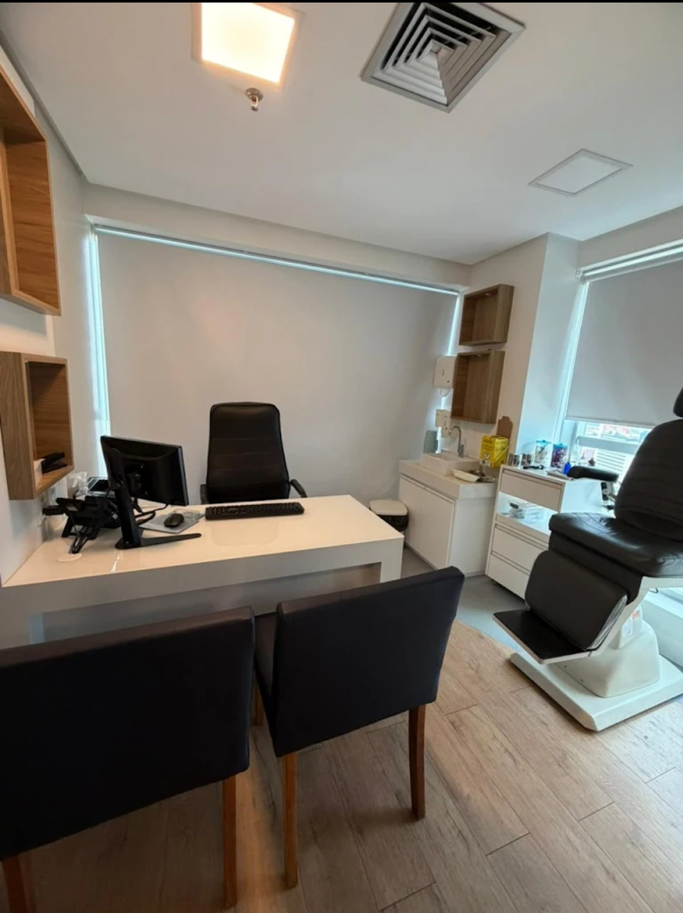
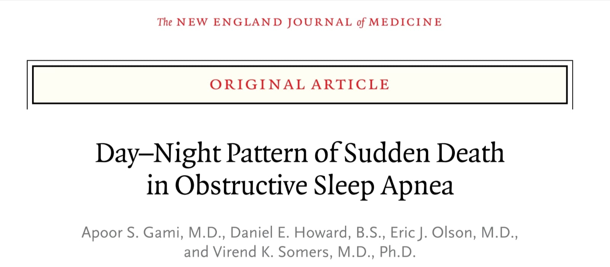
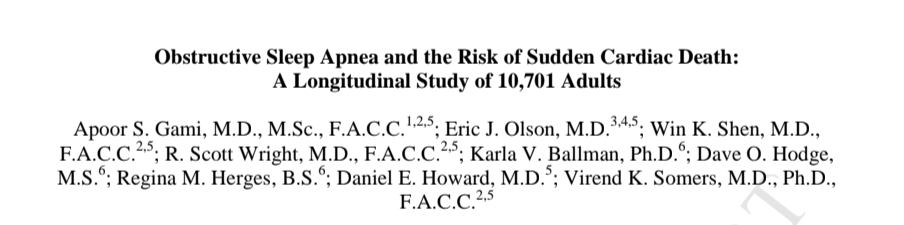
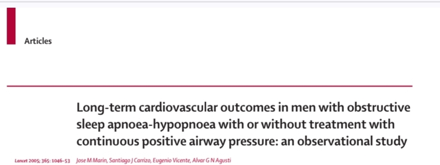
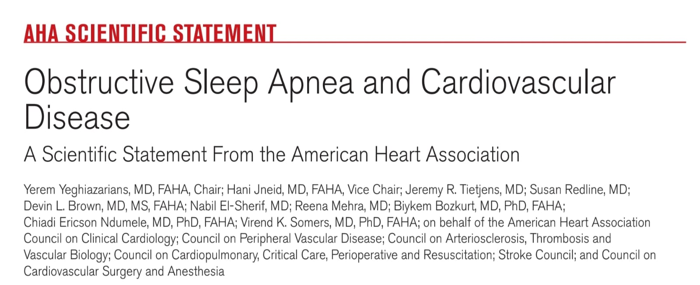

Especialista Responsável
Preceptor de Residência Médica
Hospital Santa Casa – Departameento de Otorrinolarigologia / Medicina do Sono
Hospital Santa izabel
Otorrinolaringologia • Medicina do Sono - RQE:25016
Ouvido, nariz e garganta.
Diagnóstico e tratamento completo.
Tratamento clínico e cirúrgico.
Técnicas minimamente invasivas.
Alta precisão endoscópica.
Tecnologia avançada.


Médico otorrinolaringologista, com atuação voltada ao diagnóstico e tratamento dos distúrbios respiratórios do sono com especial atenção ao ronco e à apneia obstrutiva do sono.
A abordagem parte de uma avaliação médica individualizada, que considera não apenas a doença.
A condução desses casos requer análise criteriosa dos diferentes níveis de obstrução da via aérea, permitindo uma indicação terapêutica mais precisa.
O tratamento pode envolver medidas clínicas, técnicas minimamente invasivas e cirurgia robótica transoral, quando houver indicação.
Atendimento Humanizado
Cuidado individual e personalizado
Evidências Científicas
Tratamento baseado em estudos atualizados
Uma trajetória de excelência e constante atualização científica, com formação nacional e internacional.
Hospital Santa Casa – Departameento de Otorrinolarigologia / Medicina do Sono
Hospital Santa izabel
Otorrinolaringologia
Hospital Santa Izabel
IDOR – Instituto D'Or
Instituto do Sono – São Paulo
FGV – Fundação Getúlio Vargas
University of Pennsylvania (UPenn)
Registro ao lado do Dr. Raj Dedhia durante período de formação complementar no Sleep Surgery Department da University of Pennsylvania, um dos centros de referência mundial em Cirurgia do Sono.
Experiência voltada ao aperfeiçoamento de técnicas avançadas de diagnóstico e tratamento, com integração a equipes multidisciplinares e contato com tecnologias de ponta utilizadas em centros internacionais de excelência.
Está associada a infarto, AVC, arritmias cardíacas e morte súbita. Sintomas como ronco, cansaço ao acordar e sonolência diurna devem ser investigados.




Edifício Mundo Plaza
Av. Tancredo Neves, 620 – Salas 1810 a 1812, Salvador - BA
☎ (71) 3015-0100 | (71) 3015-0200
📱 (71) 99663-9409
Atendimento hospitalar e cirurgias
☎ (71) 2203-8100